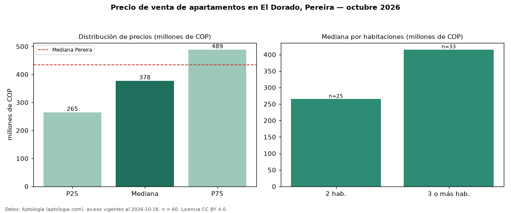

Precio de venta de apartamentos en El Dorado, Pereira — octubre 2026
Con 60 avisos vigentes, el precio mediano de apartamentos en venta en El Dorado, Pereira es COP 378 millones. Frente a la mediana de Pereira para apartamentos (COP 435 millones), queda 13 % por debajo. Por metro cuadrado, la mediana es COP 5,70 millones/m² (n = 60 avisos con área), 4 % por encima de Pereira (COP 5,50 millones/m²). El área mediana anunciada es 71 m². El segmento con más oferta es el de 3 o más habitaciones (33 avisos, mediana COP 415 millones); pasar de 2 habitaciones a 3 o más habitaciones cambia la mediana +57 %. La administración mediana declarada es COP 350.000 al mes (n = 35). Por precio mediano es el puesto 18 de 25 barrios de Pereira con al menos 30 avisos de apartamentos en venta (COP): en la franja media. La mitad central de los avisos va de COP 265 millones a COP 489 millones (razón 1,8), una dispersión moderada. Datos: Aptología (aptologia.com), CC BY 4.0 — https://www.aptologia.com/venta/pereira/el-dorado. Archivos: PDF, CSV con las cifras y gráfica PNG.

| Avisos únicos | 60 |
|---|---|
| Percentil 25 | COP 265.000.000 |
| Mediana | COP 377.500.000 |
| Percentil 75 | COP 488.750.000 |
| Mediana por m² | COP 5.704.784 |
Fuente: avisos vigentes de portales inmobiliarios recopilados por Aptología, deduplicados (mínimo 30 avisos únicos por celda). Precios pedidos, no cerrados. Fecha: 2026-10-18.